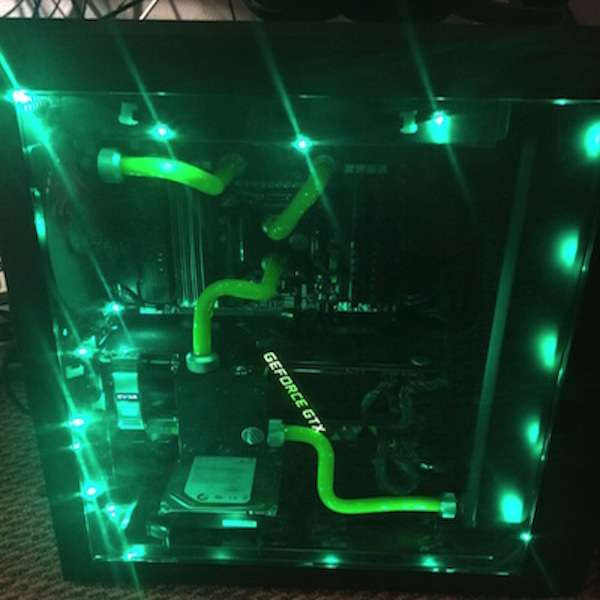
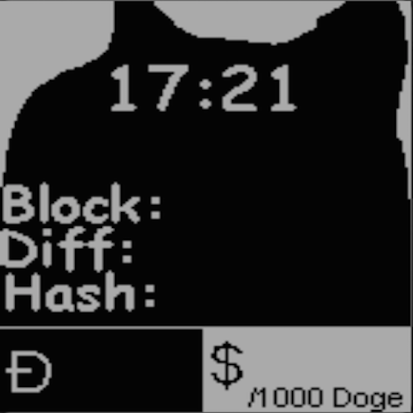

The collection of the many things that I do on the side.
Projects


Raspberry Pi/Arduino
I have recently found an interest in finding unique little applications
for tiny computers! Anywhere from using them as a web server, to
using them as data loggers that go in my car. I have been using a
raspberry pi as a data logger in my most recent project.
I have always been a big fan of video games, and I have enjoyed
playing them and had even aspired to create my own! Recently, I have
been! I can give you a little insight of what I am working on at
Cain's Works.
For a long time, I have been a computer hardware geek. Always staying
updated on the latest computer hardware, and wanting to get the latest thing.
Not only do I enjoy having a fast computer, but I enjoy making it a
project as well.
I am one of those people that enjoy having the latest gadgets. That
being said, I also was an adopter of one of the first smart watches,
the Pebble. Having this cool new device, and being a programmer,
I naturally wanted to write some code for it. I then did.